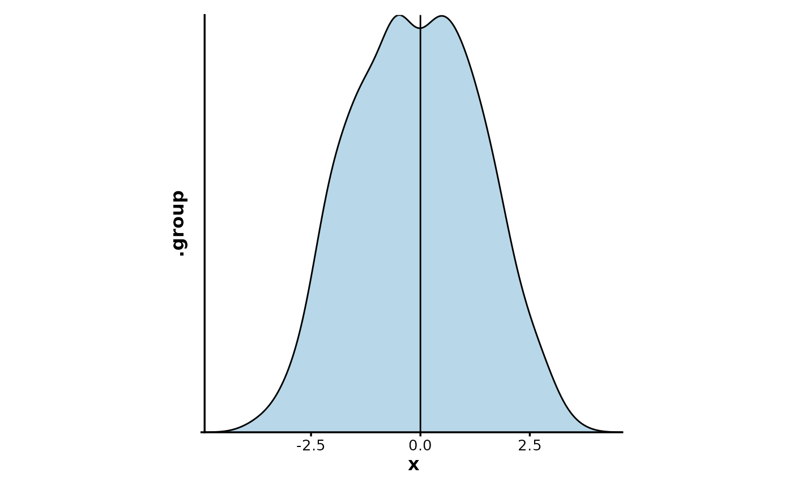
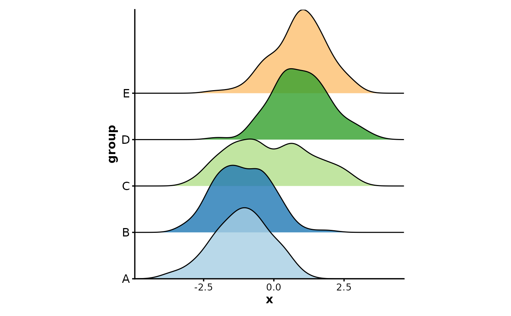
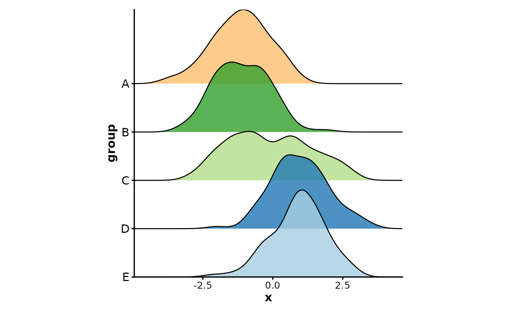
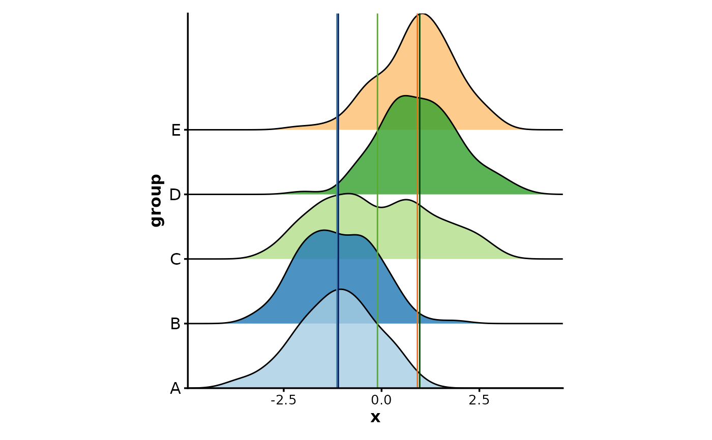
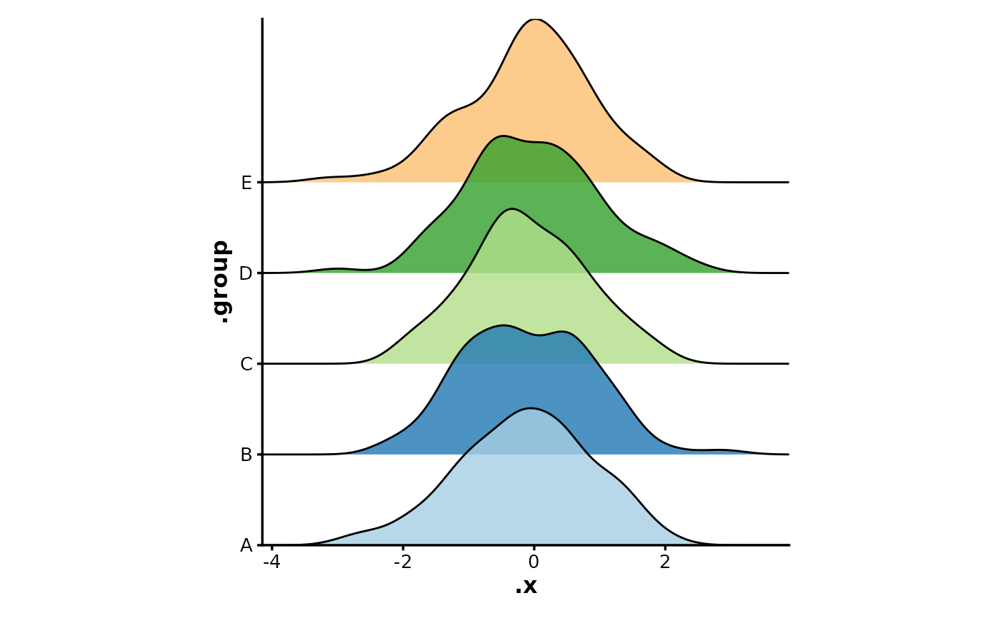
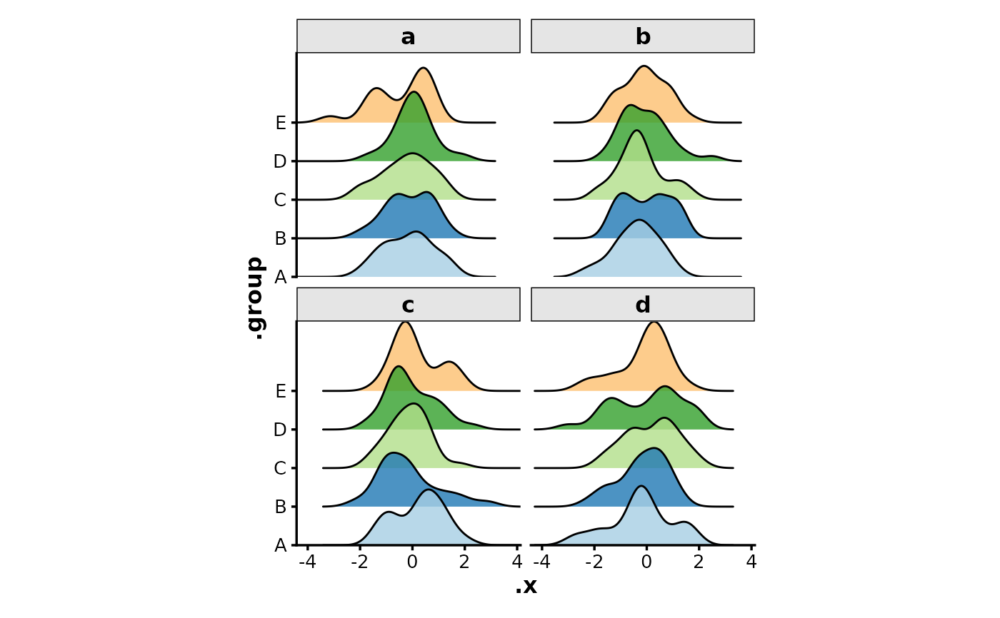

Creates ridge plots to illustrate the distribution of data across multiple groups. Groups are displayed on the y-axis with overlapping density curves.
Usage
RidgePlot(
data,
x = NULL,
in_form = c("long", "wide"),
split_by = NULL,
split_by_sep = "_",
group_by = NULL,
group_by_sep = "_",
group_name = NULL,
scale = NULL,
add_vline = NULL,
vline_type = "solid",
vline_color = TRUE,
vline_width = 0.5,
vline_alpha = 1,
flip = FALSE,
alpha = 0.8,
theme = "theme_ggforge",
theme_args = list(),
palette = "Paired",
palcolor = NULL,
title = NULL,
subtitle = NULL,
xlab = NULL,
ylab = NULL,
x_text_angle = 90,
keep_empty = FALSE,
reverse = FALSE,
facet_by = NULL,
facet_scales = "fixed",
facet_ncol = NULL,
facet_nrow = NULL,
facet_byrow = TRUE,
aspect.ratio = 1,
legend.position = "none",
legend.direction = "vertical",
combine = TRUE,
nrow = NULL,
ncol = NULL,
byrow = TRUE,
seed = 8525,
axes = NULL,
axis_titles = axes,
guides = NULL,
design = NULL,
...
)Arguments
- data
A data frame (long or wide form)
- x
Column name for values (numeric expected)
- in_form
Data format: "long" or "wide"
- split_by
Column to split data into multiple plots
- split_by_sep
Separator for concatenating multiple split_by columns
- group_by
Column(s) to group the data (shown on y-axis)
- group_by_sep
Separator for concatenating multiple group_by columns
- group_name
Legend title for group_by
- scale
Scaling factor for ridges (higher = more overlap)
- add_vline
Add vertical lines (TRUE for mean, numeric vector, or named list)
- vline_type
Line type for vertical lines
- vline_color
Color for vertical lines (TRUE to match groups)
- vline_width
Width of vertical lines
- vline_alpha
Alpha for vertical lines
- flip
Whether to flip the plot
- alpha
Transparency for ridges
- theme
Theme name or function
- theme_args
Arguments passed to theme function
- palette
Palette name
- palcolor
Custom colors
- title
Plot title
- subtitle
Plot subtitle
- xlab
X-axis label
- ylab
Y-axis label
- x_text_angle
Angle for x-axis text
- keep_empty
Keep empty groups on y-axis
- reverse
Reverse order of groups on y-axis
- facet_by
Columns for faceting
- facet_scales
Facet scales type
- facet_ncol
Number of facet columns
- facet_nrow
Number of facet rows
- facet_byrow
Fill facets by row
- aspect.ratio
Aspect ratio
- legend.position
Legend position
- legend.direction
Legend direction
- combine
Whether to combine multiple plots
- nrow
Number of rows for combined plots
- ncol
Number of columns for combined plots
- byrow
Fill combined plots by row
- seed
Random seed
- axes
Axis handling for combined plots
- axis_titles
Axis title handling for combined plots
- guides
Guide handling for combined plots
- design
Custom design for combined plots
- ...
Additional arguments passed to geom_density_ridges
Examples
set.seed(8525)
data <- data.frame(
x = c(rnorm(250, -1), rnorm(250, 1)),
group = rep(LETTERS[1:5], each = 100)
)
RidgePlot(data, x = "x") # fallback to density plot
#> Picking joint bandwidth of 0.371
RidgePlot(data, x = "x", add_vline = 0, vline_color = "black")
#> Picking joint bandwidth of 0.371

RidgePlot(data, x = "x", group_by = "group")
#> Picking joint bandwidth of 0.378

RidgePlot(data, x = "x", group_by = "group", reverse = TRUE)
#> Picking joint bandwidth of 0.378

RidgePlot(data, x = "x", group_by = "group", add_vline = TRUE, vline_color = TRUE)
#> Picking joint bandwidth of 0.378

# wide form
data_wide <- data.frame(
A = rnorm(100),
B = rnorm(100),
C = rnorm(100),
D = rnorm(100),
E = rnorm(100),
group = sample(letters[1:4], 100, replace = TRUE)
)
RidgePlot(data_wide, group_by = LETTERS[1:5], in_form = "wide")
#> Picking joint bandwidth of 0.337

RidgePlot(data_wide, group_by = LETTERS[1:5], in_form = "wide", facet_by = "group")
#> Picking joint bandwidth of 0.429
#> Picking joint bandwidth of 0.367
#> Picking joint bandwidth of 0.416
#> Picking joint bandwidth of 0.428
